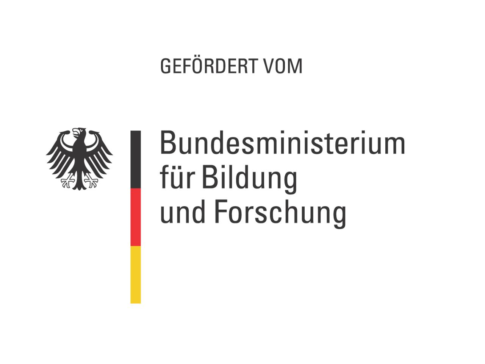

TREFFpunkt Internetworking
immer mittwochs, von 15:45 Uhr bis 17:15 Uhr
in FU C0.02
Beginn ab 06.04.2016
Tutoren TREFFpunkt Internetworking
Senior Tutor: Tobias Straub, t.straub@hs-furtwangen.de
Junior Tutorin: Seyma Nur Coban, seyma.nur.coban@hs-furtwangen.de
TREFFpunkt Übersicht
1. TREFFpunkt vom 06.04.
Download XAMPP: http://bit.ly/iw-xampp
Download Notepad++ (optional): http://bit.ly/iw-notepadpp (nur für Windows)
Probleme mit dem Start von Apache oder MySQL? Lösungen (bitte informieren Sie vorher einen Betreuer):
Skype Ports ändern: Aktionen -> Optionen -> Erweitert -> Verbindung -> Checkbox "Ports 80 und 443 als Alternative für eingehende Verbindungen verwenden" deaktivieren -> Computer neu starten (oder alternativ: Apache und Skype neu starten)
Microsoft IIS Port ändern: http://bit.ly/iw-iis
Apache Port ändern: Bitte informieren Sie einen Betreuer
MySQL Port ändern: Bitte informieren Sie einen Betreuer
Nützliche Websiten:
Farbtabelle: http://bit.ly/iw-farbtabelle
SelfHTML: http://bit.ly/iw-selfhtml
2. TREFFpunkt vom 13.04.
Aufgaben: Ansehen
Musterlösung zu Aufgabe 1:
Musterlösung zu Aufgabe 2:
Musterlösung zu Aufgabe 3:
3. TREFFpunkt vom 20.04.
Aufgaben: Ansehen
Musterlösung zu Aufgabe 1:
4. TREFFpunkt vom 27.04.
Aufgaben: Ansehen
Musterlösung zu Aufgabe 1:
5. TREFFpunkt vom 04.05.
Aufgaben: Ansehen
Musterlösung zu Aufgabe 1:
Musterlösung zu Aufgabe 2:
6. TREFFpunkt vom 11.05.
Aufgaben: Ansehen
Musterlösung zu Aufgabe 1:
Musterlösung zu Aufgabe 2:
7. TREFFpunkt vom 25.05.
Aufgaben: Ansehen
Musterlösung zu Aufgabe 1:
8. TREFFpunkt vom 01.06.
Aufgaben: Ansehen
Musterlösung zu Aufgabe 1:
Musterlösung zu Aufgabe 2:
9. TREFFpunkt vom 08.06.
Aufgaben: Ansehen
Musterlösung zu Aufgabe 1:
10. TREFFpunkt vom 15.06.
Aufgaben: Ansehen
Musterlösung zu Aufgabe 1:
11. TREFFpunkt vom 22.06.
Aufgaben: Ansehen
Musterlösung zu Aufgabe 1:
12. TREFFpunkt vom 29.06.
Probeklausur: Ansehen
